四个页面（仓库台 / 采购台 / 车间看板 / 我的工作台）× 四个版本（现状 + 三个方向）。全部是真实运行中的系统截图，不是设计稿 —— 三个方向是用样式覆盖在真页面上截的，所以密度、数据量、真空态都在。
已落地三条：①台头只说现状（长流程说明进 ? 气泡）· ②结论条 1 主 4 次（32px 主角 + 20px 其余，页面显式指认）· ③队列行左侧 3px 状态色条。实测页高代价 0px。下方 「已落地实拍」 链接可看真实系统里的效果。
不是主观印象。把每页每个元素的 computed style 统计了一遍，跟视觉规范的刻度对账：
| 维度 | 规范定的 | 实测 | 造成的观感 |
|---|---|---|---|
| 内边距 | 8px 刻度 | 14 种不同组合 | 边距对不齐 → 糙 |
| 圆角 | 3 档 | 6 种（含 2px / 100px / 999px 逃逸值） | 圆角不统一 → 糙 |
| 字号 | 6 档刻度 | 8 种（13.33px / 13.5px 是逃逸值） | 字号有零头 → 糙 |
| 字重 | 400 + 600 | 4 种（多了 500 / 700） | 主次不明 → 平 |
| 结论条 | ≤5 个数 | 5 个数全部 24px、等大等权 | 没有主角 → 平 |
| 颜色 | 颜色只给异常 | 全站唯一的色彩是选中态的蓝；队列行没有状态色 | 扫不出状态 → 闷 |
| 留白 | 一屏内 | 5 页底部空白 >250px（车间看板 465px）；3 页反过来超屏 76–119px | 要么空、要么挤 → 散 |
| 台头 | 一句话现状 | 台名 + 一长串流程说明（工程台 40 字） | 第一屏没回答"今天干什么" |
只把落地率拉满：内距归 4 档、圆角归 3 档、字号归刻度、字重归 2 档、字色归中性色板。不动任何结构。解决「糙」。
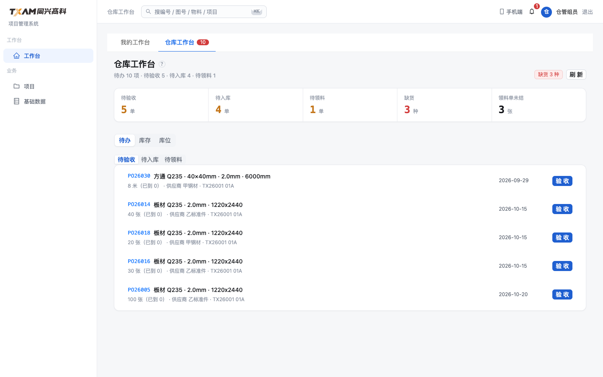
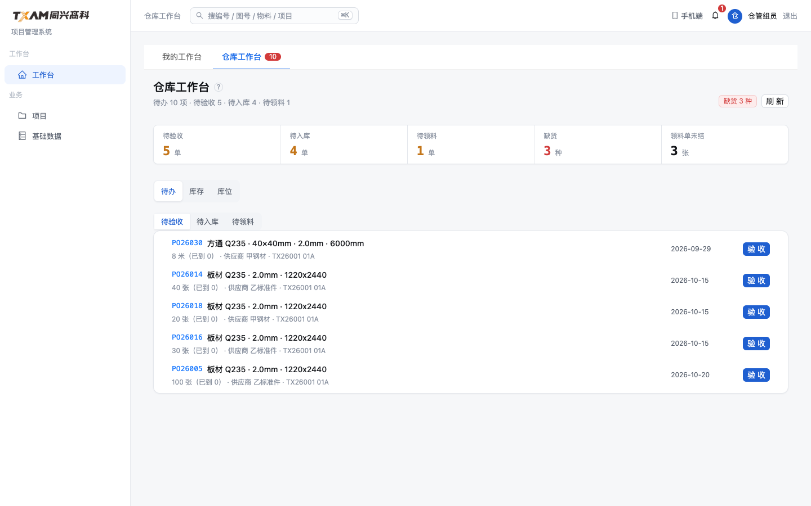
代价 1 天，零结构风险。不解决 「平 / 闷 / 散」—— 结构没动，主次和状态色都还在原地。适合当地基而不是终点。
改壳（9 个台共用 WorkbenchPage + components/ds 六壳，改一处 9 个台同步受益）：台头加主色竖条、长说明进 ?；结论条改成 1 主 4 次（第一个 34px 主色）；队列行加 3px 状态色条并卡片化；面与面用底色分层（纸面 A 说"层级靠描边+背景分层"，之前没用足）。
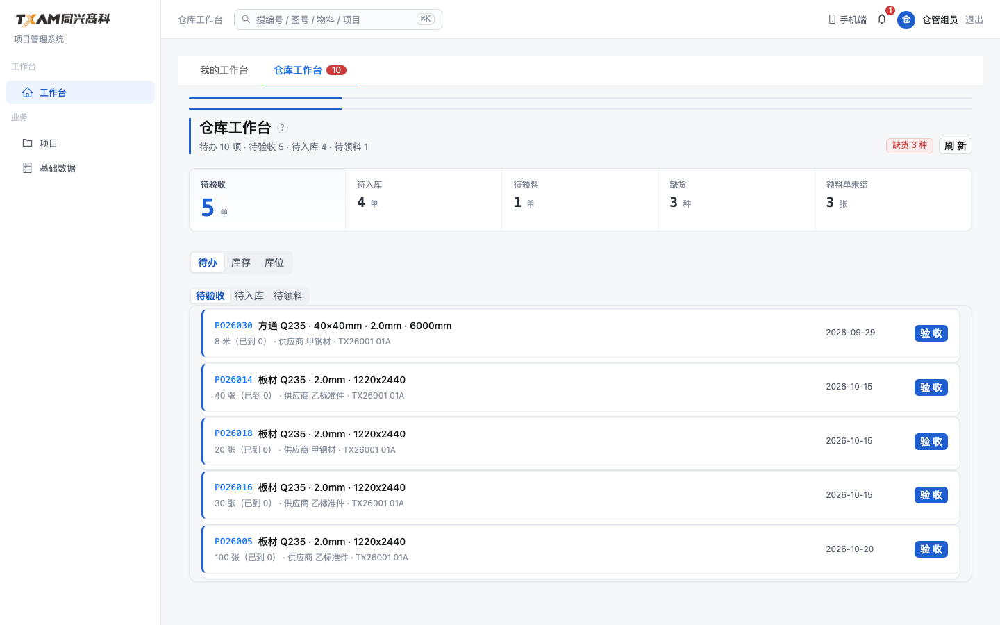
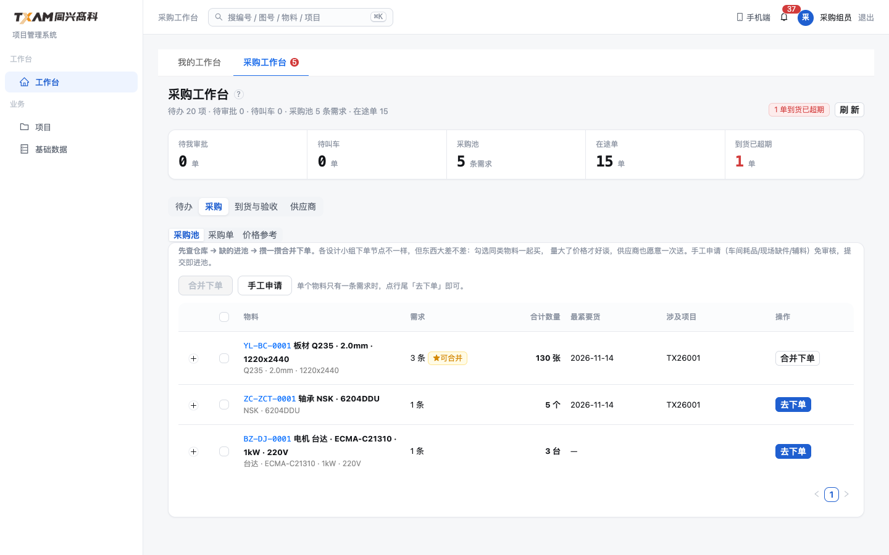
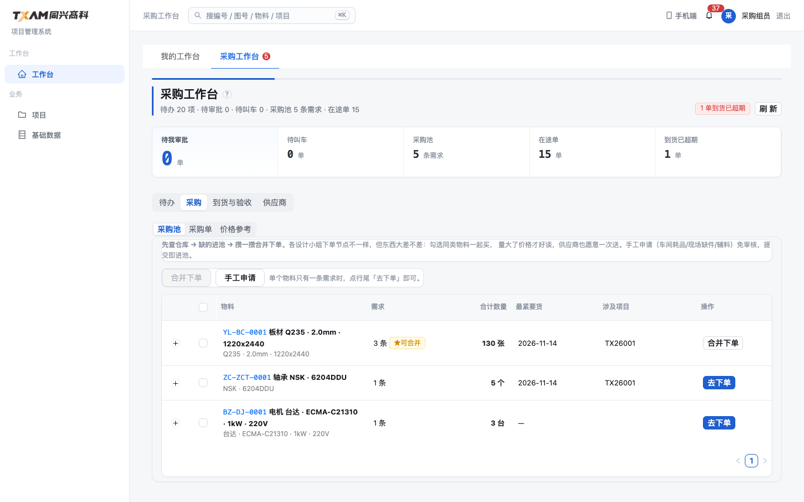
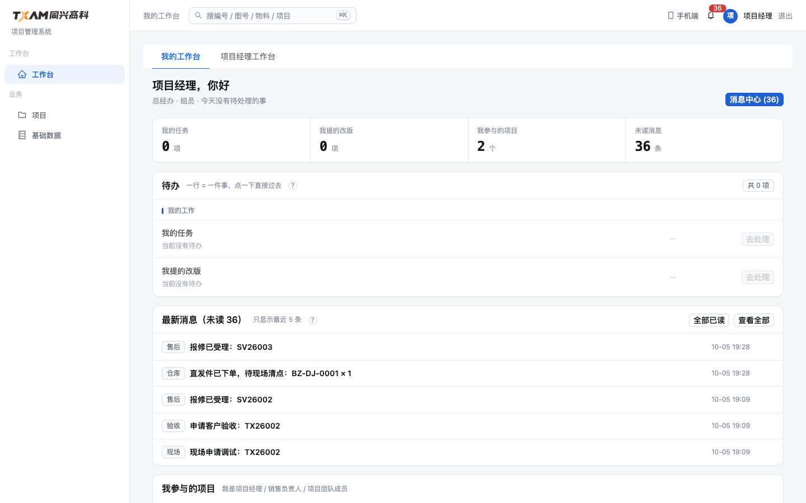
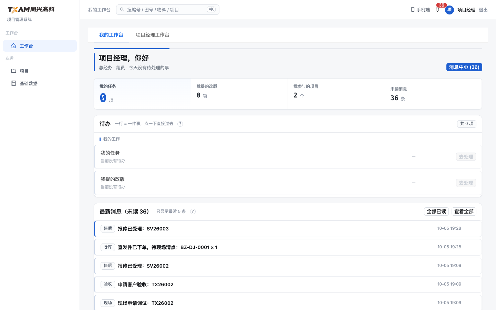
代价 约 1 周（壳为主，9 个台同步受益；工程部台「部门看板」那块旧壳要一起收）。风险 中低 —— 不动数据结构、不动接口。不解决 空台 465px 空白（那是内容问题，得靠"空态给下一步"，属另一轮）。
台头 + 结论条整块深色（样机 B「墨蓝 Console」的基因），队列行首 3px 主色条。视觉冲击最强、最"像生产系统"、扫读最快。
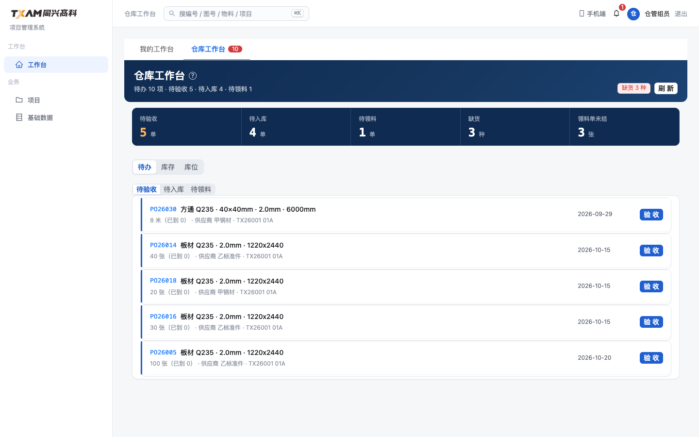
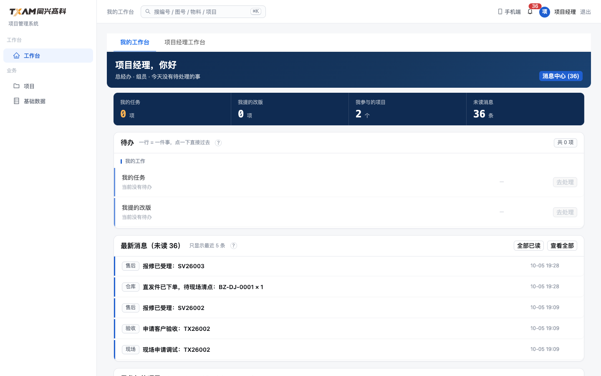
代价 1–2 周，且要推翻 10-04 已定的 A 方向（客户当时点的就是 A）。我的判断：深色台头每天盯 8 小时偏压迫，且和工作台"长时间盯一片队列"的场景不太合；更适合驾驶舱/大屏那种"看一眼就走"的页面 —— 建议只在那里用，不全站换。
?）—— 这是“第一屏先给结论”的代价。下面是方向 2 真的落进代码之后的系统实拍，可与上方「方向 2」原型图对比。 两处有意没做原型里那版：① 队列行不卡片化（每行 +14px，5 行 +70px，而页高已被客户骂过）； ② 不给整队列上色（5 行同色连成一条长线 = 等于没上）—— 只给“与其他不同”的行。
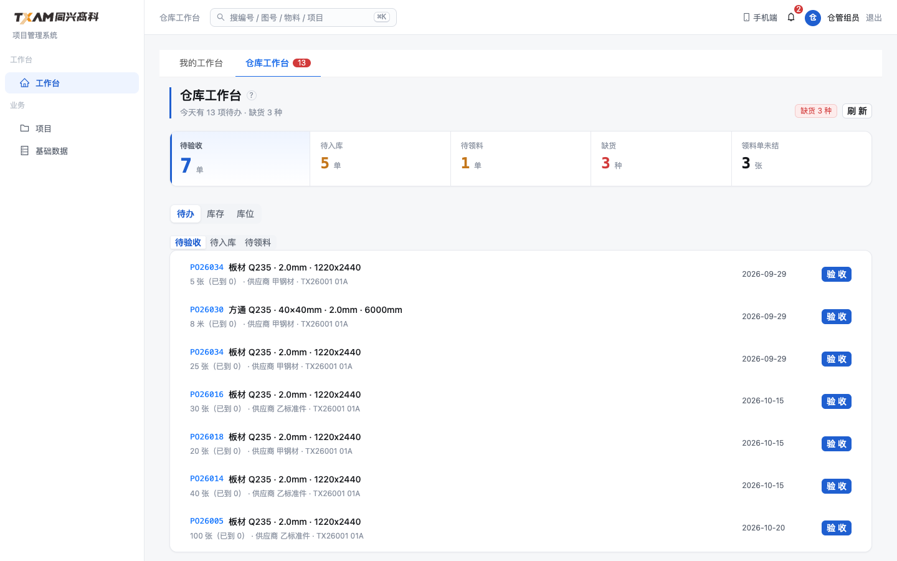
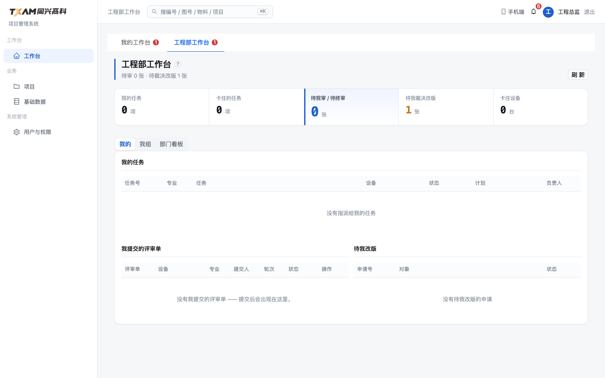
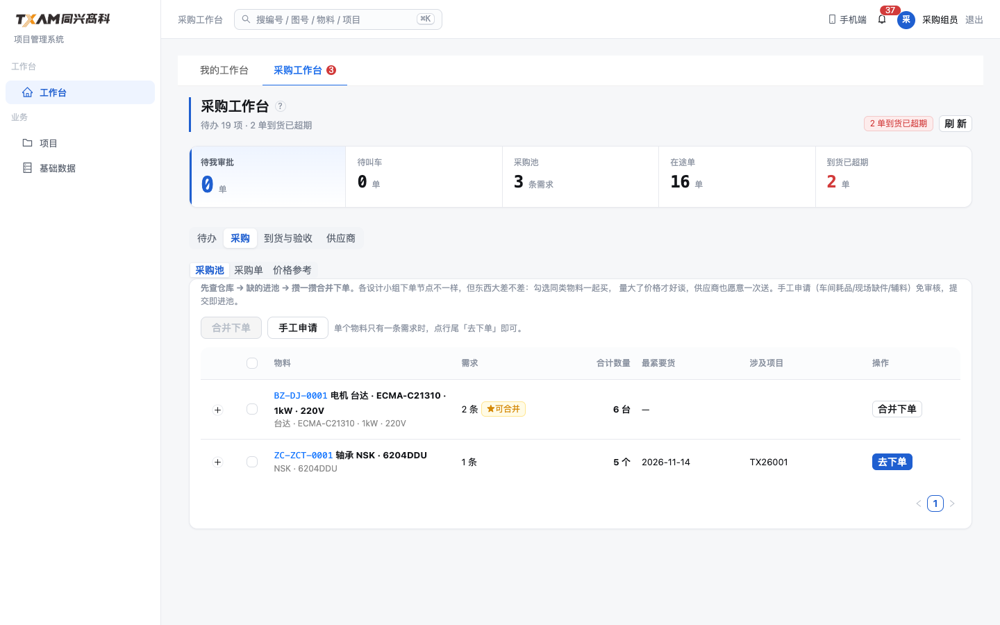
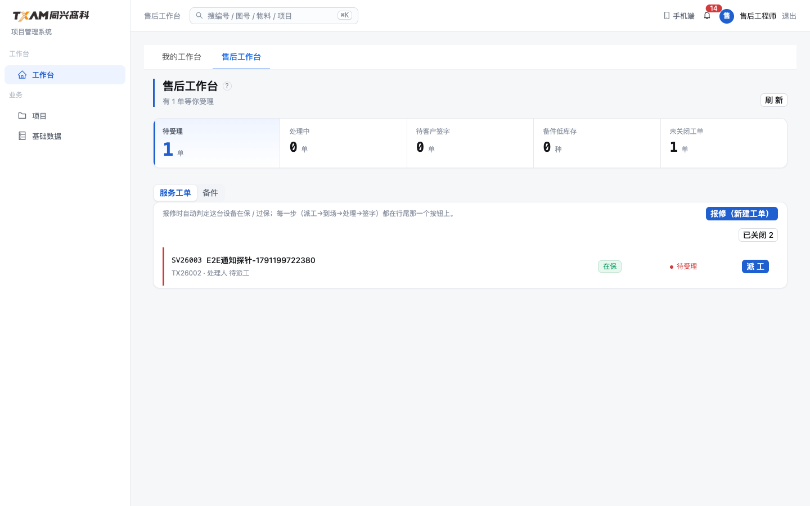
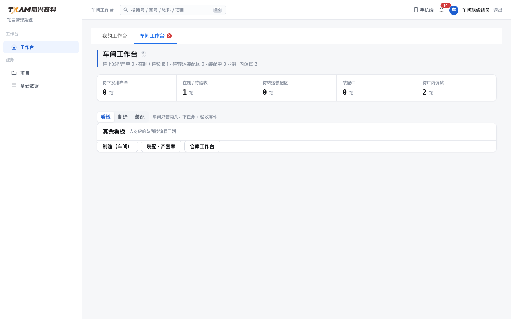
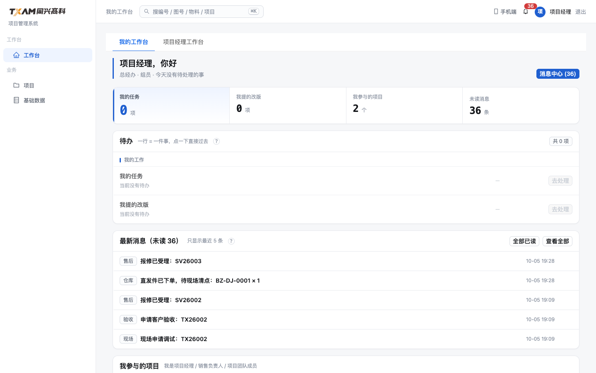
护栏 SHELL2-方向2结论优先：每个台的结论条有且只有一个 lead · 台头 sub 里不出现流程动作词 · 壳支持 tone 且至少两个台真在用。两条反例已注入自证能红（护栏写了三次才对：搜→假阳性 → 量字面量错 → 改成流程动作词）。